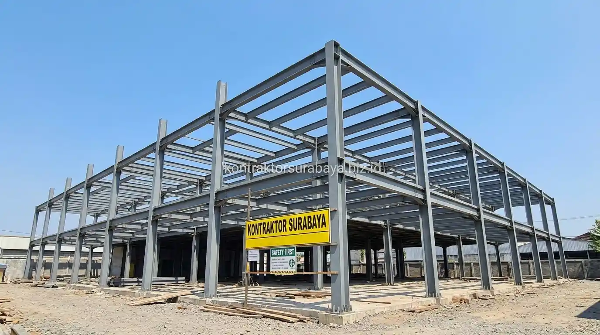

Mendirikan bangunan rumah toko (ruko) 3 lantai di kawasan komersial metropolitan seperti Surabaya, Sidoarjo, maupun Gresik merupakan investasi bernilai tinggi yang memerlukan perhitungan matang sejak tahap perencanaan struktur. Ruko memiliki tuntutan fungsi ganda: lantai dasar sering dimanfaatkan sebagai tempat usaha, showroom, atau kantor dengan bentang ruang terbuka yang luas, sementara lantai atas kerap dialihfungsikan sebagai area operasional gudang ringan atau hunian residensial.
Bagi para investor dan pemilik bisnis, salah satu dilema teknis terbesar adalah memilih antara struktur beton bertulang konvensional atau struktur rangka baja WF (Wide Flange). Kedua metode konstruksi ini memiliki keunggulan mekanis, efisiensi waktu, serta implikasi anggaran yang sangat berlainan.
1. Karakteristik Dasar Struktur Beton Bertulang
Struktur beton bertulang menggabungkan beton yang kuat menahan gaya tekan (compressive strength) dengan besi tulangan ulir/polos yang kuat menahan gaya tarik (tensile strength), dicor langsung di lokasi proyek (cast-in-situ) sesuai bentuk cetakan bekisting yang telah disiapkan secara presisi.
Proses pengerjaan struktur beton melibatkan beberapa tahapan berurutan: pembuatan perancah dan bekisting, perakitan anyaman besi tulangan kolom-balok, hingga proses pengecoran basah. Karakteristik utama dari beton adalah adanya masa hidrasi semen (curing time) di mana beton membutuhkan waktu minimal 21 hingga 28 hari untuk mencapai kuat tekan 100% sebelum bekisting penopang dapat dibongkar secara menyeluruh. Durasi pengerjaannya cenderung lebih bertahap dan membutuhkan manajemen lapangan yang ketat.
2. Karakteristik Dasar Struktur Baja WF (Wide Flange)
Struktur baja WF menggunakan profil baja struktural berbentuk huruf H/I yang diproduksi secara terstandarisasi di pabrik (mill factory) dengan standar dimensi dan mutu baja tinggi (seperti BJ 37 atau BJ 44 / ASTM A36). Seluruh elemen kolom, balok induk, dan balok anak difabrikasi di workshop pemotongan, pelubangan plat buhul (gusset plate), serta pengecatan dasar sebelum diangkut ke lokasi kerja.
Karena elemen baja sudah dalam bentuk jadi saat tiba di lokasi, proses perakitan struktur berlangsung melalui metode erection kering menggunakan crane atau katrol chain-block, disambung dengan baut mutu tinggi (High-Tensile Bolts) atau pengelasan bersertifikat. Struktur ini banyak dipilih untuk proyek komersial yang mengejar target perputaran modal (return on investment) dan target pembukaan usaha lebih awal.
3. Perbandingan Kecepatan Pembangunan Beton vs Baja WF
Struktur baja WF umumnya dapat dirakit jauh lebih cepat karena hampir 80% proses pemotongan dan fabrikasi dilakukan paralel di workshop bersamaan dengan penggalian pondasi tapak (footplat) dan strauss pile di lokasi proyek. Begitu pondasi dan kolom pedestal selesai, rangka baja 3 lantai dapat didirikan hanya dalam kurun waktu 2 hingga 4 minggu.
Sebaliknya, pada struktur beton bertulang, pekerjaan harus berlangsung sekuensial (berurutan) lantai per lantai:
- Pengecoran kolom dan balok lantai 1 → menunggu beton mengeras → pemasangan perancah lantai 2.
- Pengecoran plat dak lantai 2 → masa tunggu pelepasan perancah bawah → naik ke lantai 3.
Pada proyek ruko 3 lantai, perbedaan kecepatan ini dapat memangkas total durasi proyek konstruksi fisik hingga 1,5 sampai 2,5 bulan lebih singkat saat menggunakan baja WF dikombinasikan dengan plat lantai komposit bondek (floor deck).
| Parameter Komparasi | Struktur Beton Bertulang | Struktur Baja WF (Wide Flange) | Implikasi pada Ruko 3 Lantai |
|---|---|---|---|
| Kecepatan Konstruksi | Sekuensial per lantai (4–6 bulan struktur) | Sistem rakitan cepat (2–3 bulan struktur) | Baja WF unggul 35% lebih cepat operasional usaha. |
| Fleksibilitas Bentang Ruang | Maksimal bentang 5–6 m tanpa balok tebal | Sanggup bentang 8–12 m bebas kolom tengah | Baja WF sangat ideal untuk lantai dasar ruko/showroom luas. |
| Ketahanan Terhadap Api | Alami tahan panas tinggi hingga 2–4 jam | Perlu lapisan fireproofing tambahan | Beton lebih unggul dari segi keselamatan pasif kebakaran. |
| Perawatan Jangka Panjang | Hampir tanpa perawatan struktural khusus | Pengecatan anti-karat berkala pada area lembap | Beton minim biaya pemeliharaan setelah serah terima. |
| Kemudahan Modifikasi | Sulit dibongkar / direlokasi ulang | Mudah disambung, diperkuat, atau dibongkar | Baja WF unggul jika ada rencana renovasi/ekspansi kelak. |

4. Perbandingan Biaya Awal dan Biaya Perawatan Jangka Panjang
Struktur baja WF umumnya memerlukan biaya material awal per kilogram yang berfluktuasi mengikuti pasar komoditas baja internasional, serta ongkos fabrikasi workshop dan alat berat crane. Namun, tingginya biaya material awal ini sering kali terkompensasi oleh efisiensi upah tukang (karena jumlah hari kerja berkurang signifikan) dan pondasi yang lebih ekonomis akibat bobot mati struktur baja yang lebih ringan sekitar 30–40% dibanding beton.
Di sisi lain, pertimbangan biaya juga menyangkut biaya perawatan jangka panjang:
- Struktur Beton Bertulang: Sekali selesai diplester dan dicat eksterior tahan cuaca, struktur beton practically bebas perawatan struktural selama tidak ada kebocoran air atau gempa dahsyat.
- Struktur Baja WF: Memerlukan inspeksi baut berkala dan pengecatan ulang anti-korosi (terutama di wilayah pesisir dengan kadar garam dan kelembapan tinggi) agar tidak terjadi karat tersembunyi di balik dinding partisi.
5. Kelebihan dan Keterbatasan Struktur Beton untuk Ruko 3 Lantai
Ketahanan terhadap api, kebutuhan perawatan struktural yang minim, kemampuan meredam suara lebih baik, dan waktu pengerjaan yang lebih panjang adalah empat kelebihan dan keterbatasan utama struktur beton untuk ruko 3 lantai:
- Ketahanan Alami Terhadap Api: Beton adalah material anorganik yang tidak mudah terbakar dan memiliki konduktivitas termal rendah, memberikan perlindungan struktural maksimal bagi aset bisnis di dalam ruko.
- Kebutuhan Perawatan Struktural Minim: Tidak rentan terhadap korosi atmosferik selama selimut beton (concrete cover) memenuhi standar SNI 2847.
- Peredaman Suara & Getaran Lebih Baik: Massa beton yang padat mampu meredam kebisingan lalu lintas jalan raya dan getaran langkah kaki dari lantai atas ruko.
- Waktu Pengerjaan Lebih Panjang: Menjadi keterbatasan utama, terutama jika pemilik ruko terikat tenggat waktu sewa lahan atau pembukaan cabang bisnis waralaba (franchise).
6. Kelebihan dan Keterbatasan Struktur Baja WF untuk Ruko 3 Lantai
Kecepatan pemasangan yang lebih tinggi, bobot struktur yang lebih ringan, kemudahan modifikasi di masa depan, dan kebutuhan perawatan anti karat berkala adalah empat kelebihan dan keterbatasan utama struktur baja WF untuk ruko 3 lantai:
- Kecepatan Pemasangan Ekstrem: Perakitan modul baja presisi memangkas durasi konstruksi hingga 40%, memungkinkan ruko mulai beroperasi menghasilkan pemasukan sewa lebih cepat.
- Bobot Sendiri Ringan: Mengurangi beban gravitasi total bangunan pada pondasi, sangat menguntungkan bila lokasi ruko berada pada tanah lempung lunak di Surabaya Timur.
- Kemudahan Modifikasi & Nilai Sisa: Bila di kemudian hari ruko ingin ditambah mezzanine, diubah denahnya, atau dibongkar, material profil baja WF masih memiliki nilai jual kembali (scrap value) yang tinggi.
- Kebutuhan Proteksi Api & Karat: Mengharuskan aplikasi cat anti-karat bermutu tinggi dan lapisan tahan api khusus untuk memenuhi izin Sertifikat Laik Fungsi (SLF).
7. Faktor yang Menentukan Pilihan Struktur Terbaik untuk Proyek Anda
Target waktu penyelesaian proyek, kondisi tanah dan pondasi, anggaran perawatan jangka panjang, dan kebutuhan fleksibilitas modifikasi di masa depan adalah empat faktor penentu pilihan struktur paling tepat:
- Target Waktu Operasional: Jika ruko akan disewakan kepada ritel modern atau perbankan dengan tenggat waktu ketat, baja WF adalah pilihan unggul.
- Kondisi Tanah Lahan: Pada daya dukung tanah terbatas, baja WF meminimalkan dimensi tiang pancang pondasi.
- Rencana Penggunaan Ruang: Bila lantai 1 butuh ruang plong 8 meter tanpa sekat kolom tengah untuk parkir atau display produk, baja WF memberikan bentang bebas kolom paling efisien.
- Anggaran Konstruksi vs Perawatan: Bila Anda menginginkan investasi jangka panjang yang minim biaya pemeliharaan pasca-konstruksi, beton bertulang adalah opsi paling tenang.
"Kunci keberhasilan konstruksi ruko komersial 3 lantai bukan sekadar memilih material termurah, melainkan menyelaraskan kecepatan perputaran modal operasional bisnis dengan efisiensi rekayasa struktur bangunan."
Pemilihan struktur yang tepat sebaiknya mempertimbangkan kombinasi faktor teknis dan kebutuhan operasional usaha Anda secara menyeluruh. Pelajari cakupan layanan konstruksi gedung komersial kami pada halaman jasa kontraktor bangunan komersial, simulasikan anggaran proyek Anda pada halaman RAB & estimasi biaya, atau lihat ragam proyek komersial kami pada halaman layanan kontraktor kami.